Week 3 Quiz - Production and Costs (English)
Question 1 (2 points)
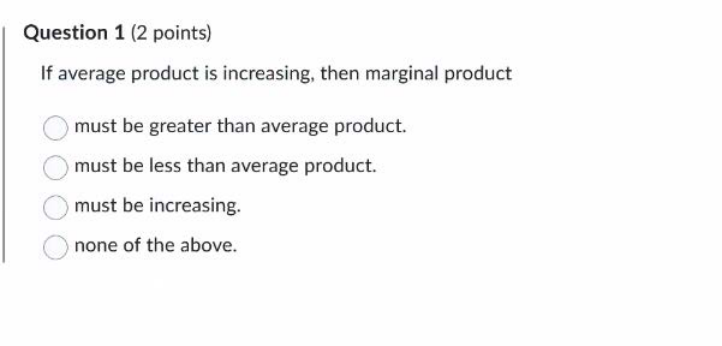
Answer: must be greater than average product.
Explanation: When the average curve is rising, the marginal curve must be above it (pulling it up).
Question 2 (2 points)
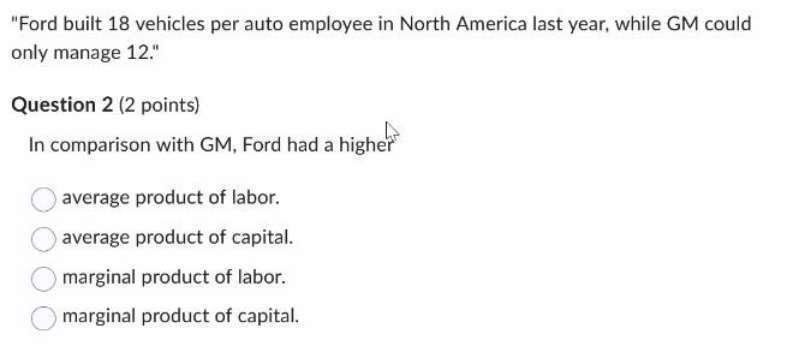
Answer: average product of labor.
Explanation: Vehicles per employee represents Average Product of Labor ($AP_L = Q/L$). Since 18 > 12, Ford's $AP_L$ is higher.
Question 3 (2 points)
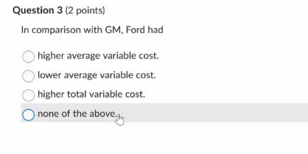
Answer: lower average variable cost.
Explanation: Average Variable Cost is inversely related to Average Product ($AVC = w/AP$). Assuming similar wages, a higher AP implies a lower AVC.
Question 4 (2 points)
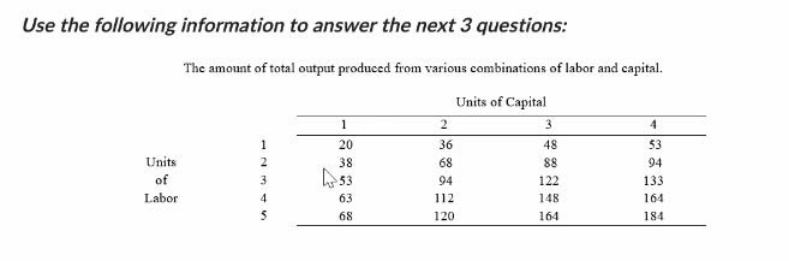 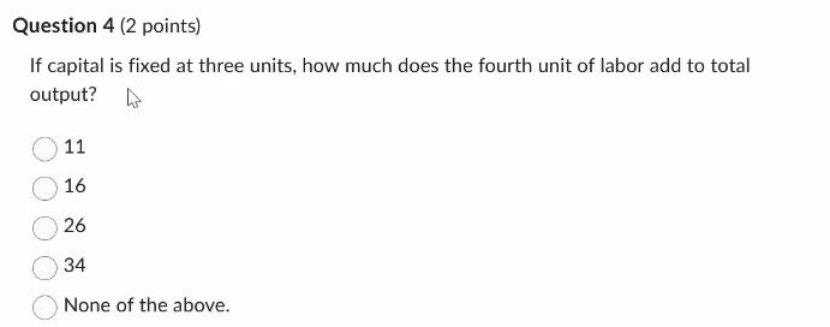
Answer: 26
Explanation: Marginal Product ($MP_L$) = $Q(4,3) - Q(3,3) = 148 - 122 = 26$.
Question 5 (2 points)
(Refer to Table in Question 4)

Answer: increases by 8 units.
Explanation: The marginal productivity of capital ($MP_K$ for 2nd unit) increased from 41 ($94-53$) to 49 ($112-63$), a rise of 8.
Question 6 (2 points)
(Refer to Table in Question 4)

Answer: increases by 5 units.
Explanation: The marginal productivity of labor ($MP_L$ for 4th unit) increased from 26 ($148-122$) to 31 ($164-133$), a rise of 5.
Question 7 (2 points)
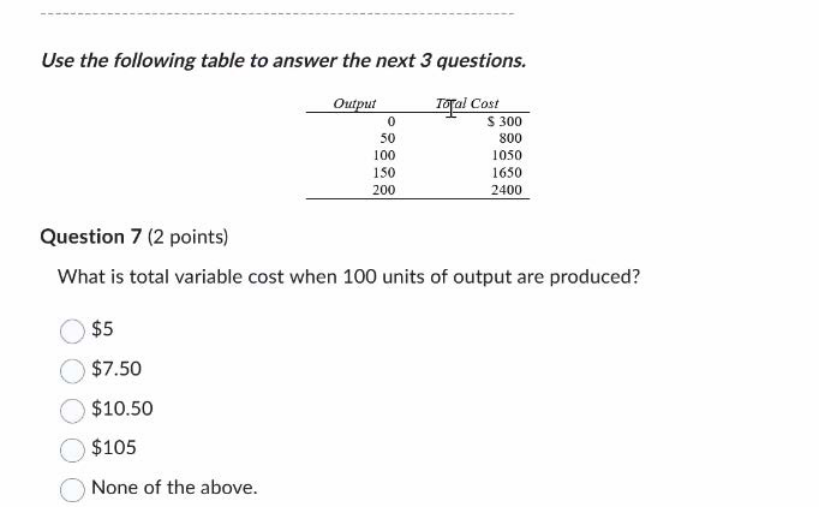
Answer: $7.50
Explanation: Calculated Total Variable Cost (TVC) is $1050 - 300 = 750$. The options match Average Variable Cost ($7.50), suggesting a typo in the question. $7.50 is the correct derived value for AVC.
Question 8 (2 points)

Answer: $2
Explanation: $AFC = FC/Q = 300/150 = 2$.
Question 9 (2 points)
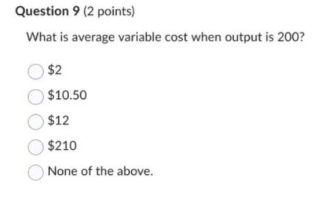
Answer: $10.50
Explanation: VC = $2400 - 300 = 2100$. $AVC = 2100/200 = 10.50$.
Question 10 (2 points)
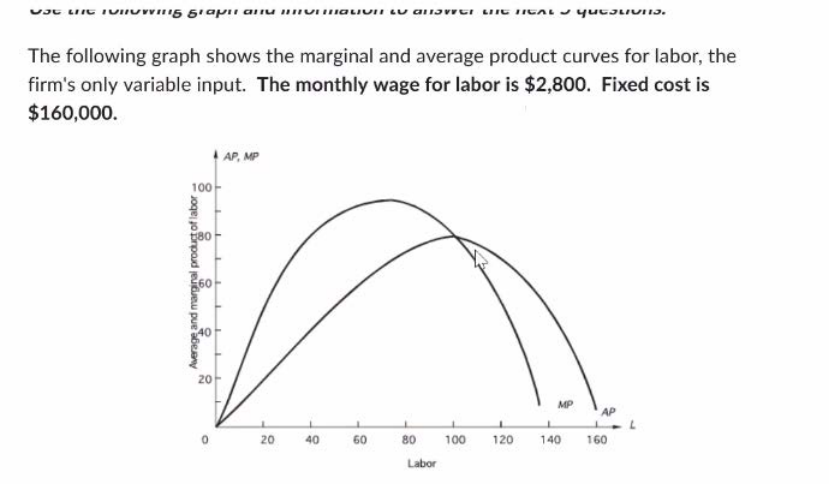

Answer: 8,000 units
Explanation: Minimum Average Variable Cost occurs where AP is maximized (intersection of AP and MP). $Q = L \times AP = 100 \times 80 = 8000$.
Question 11 (2 points)
(Refer to Graph in Question 10)
Answer: $35
Explanation: Min AVC = $w / Max AP = 2800 / 80 = 35$.
Question 12 (2 points)
(Refer to Graph in Question 10)

Answer: 1,600 units
Explanation: From the graph, at L=40, Average Product (AP) is 40. $Q = L \times AP = 40 \times 40 = 1600$.
Question 13 (2 points)
(Refer to Graph in Question 10) 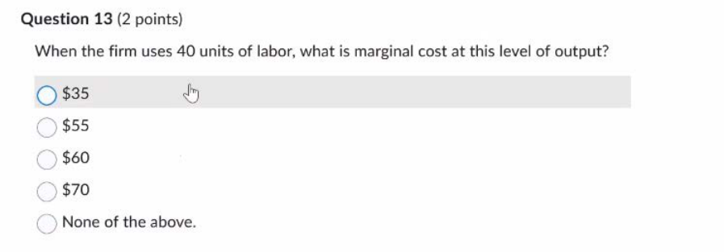
Answer: $35
Explanation: From graph, Marginal Product (MP) passes through 80 at L=40. $MC = w / MP = 2800 / 80 = 35$.
Question 14 (2 points)

Answer: $170
Explanation: VC = $40 \times 2800 = 112,000$. TC = $160,000 + 112,000 = 272,000$. $ATC = 272,000 / 1600 = 170$.
Question 15 (2 points)
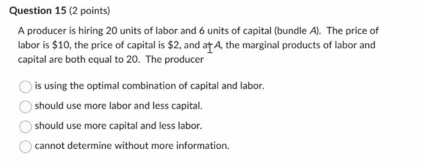
Answer: should use more capital and less labor.
Explanation: Bang for buck: $MP_L/P_L = 20/10 = 2$. $MP_K/P_K = 20/2 = 10$. Capital is more efficient per dollar.
Question 16 (2 points)


Answer: $5.00
Explanation: Slope of Isocost = $P_L/P_K = 21/35 = 0.6$. $3/P_K = 0.6 \Rightarrow P_K = 5$.
Question 17 (2 points)
(Refer to Graph in Question 16)

Answer: 18 units of capital
Explanation: Tangency (Point A) on Q=300 isoquant corresponds to L=20. From Isocost equation ($K = 30 - 0.6L$), $K = 30 - 12 = 18$.
Question 18 (2 points)

Answer: 0.6
Explanation: At the optimal point B (tangency to Q=100), MRTS equals the ratio of input prices ($P_L/P_K$), which is 0.6.
Question 19 (2 points)
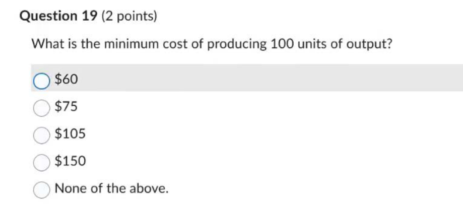
Answer: $105
Explanation: The isocost line passing through B has horizontal intercept 35. Total Cost = $P_L \times L_{intercept} = 3 \times 35 = 105$.
Question 20 (2 points)
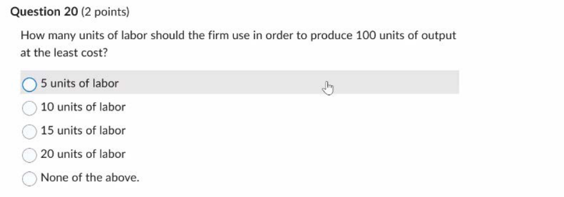
Answer: 10 units of labor
Explanation: Point B lies on the line $K=15$ and the isocost line $K = 21 - 0.6L$. Solving gives $15 = 21 - 0.6L \Rightarrow 0.6L = 6 \Rightarrow L=10$.